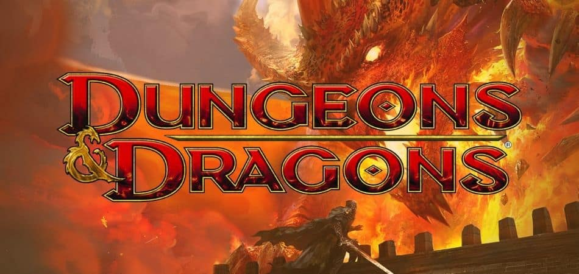

Bosses & Battles
Bosses & Battles is a card and dice game that implements mechanics from Dungeons and Dragons (DnD) and the JRPGs pictured below. It is designed to simulate a JRPG boss fight while using DnD mechanics. One game involves a team of heroes (at least 3 players) and a boss. Each player on the hero team picks one of 7 classes with set abilities and works together to try and defeat the boss player. The game ends when the hero party has been defeated, the boss is defeated or the game reaches the turn limit (in which case the boss wins).
